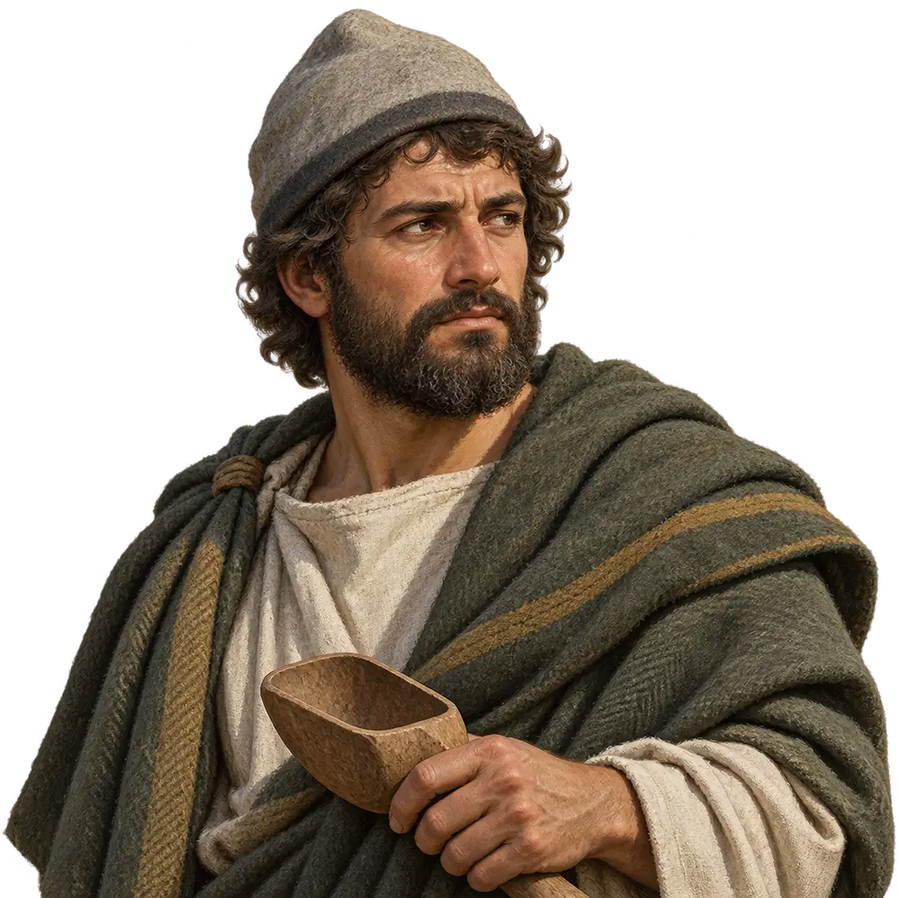
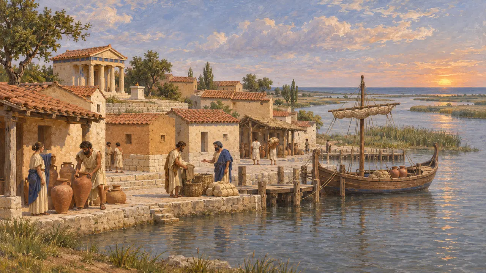
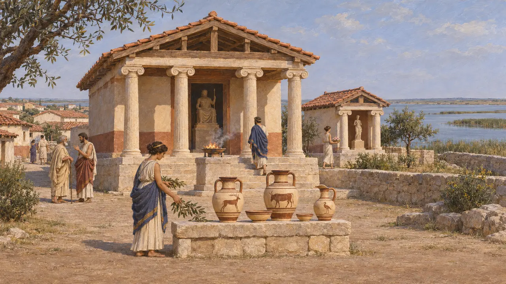
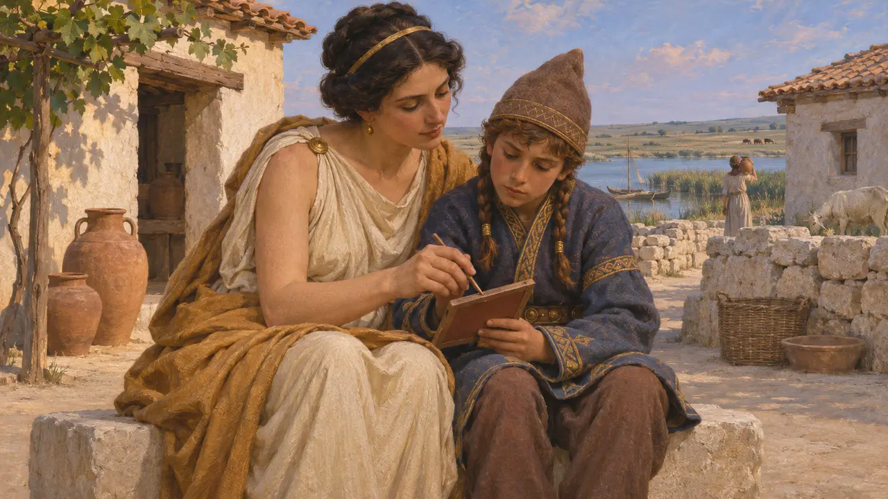
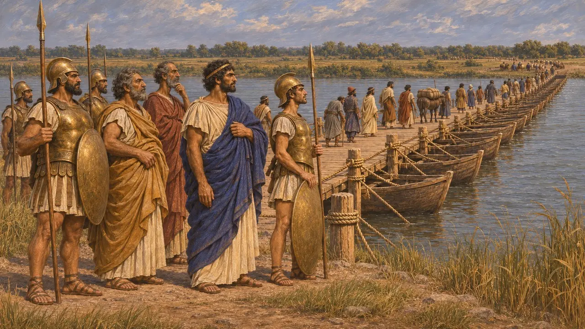
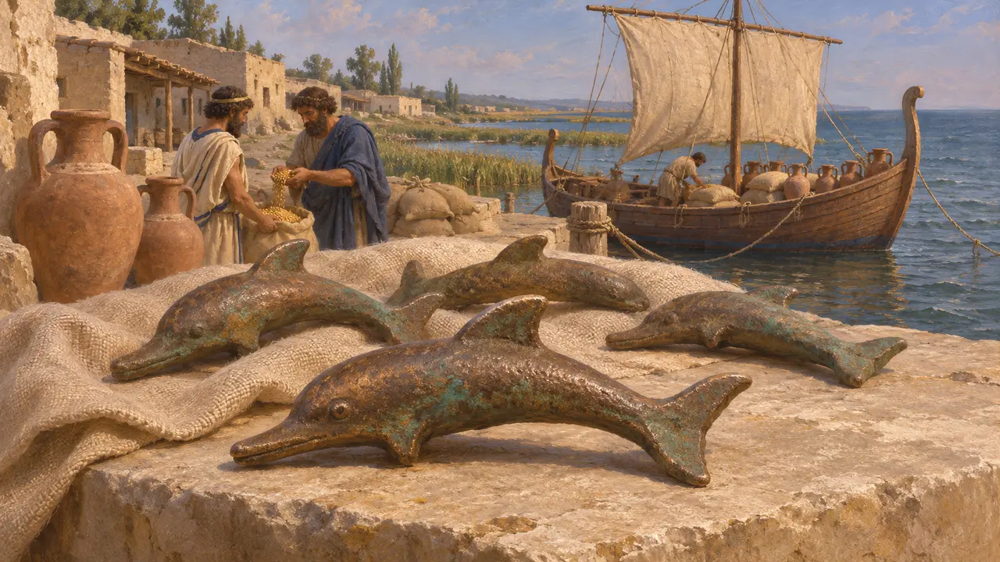

Los griegos de Istro
Colonia milesia en la costa del mar Negro, cerca de la desembocadura del Istro, desde finales del siglo VII a. e. c.
En el juego: Nivel 6: El Puente de Barcas, Nivel 10: Las Puertas Calientes
Istro, también llamada Histria, fue una ciudad griega fundada por colonos de Mileto junto a una laguna al sur del delta del Danubio, en la actual Rumanía. Vivía del comercio con los getas y los escitas del interior. Cuando Darío condujo su ejército a través del Istro contra los escitas hacia el 513 a. e. c., Istro se encontraba cerca de la ruta, aunque ningún autor antiguo dice qué papel desempeñó, si es que desempeñó alguno.
En el juego: En el juego, Istro es un socio comercial en el nivel del Istro. Ninguna fuente antigua registra que la ciudad comerciara con el ejército de Darío; es una invención verosímil basada en su posición cerca de la desembocadura del río.

Una ciudad milesia en la desembocadura del río
Relato antiguoHeródoto sitúa Istria donde el Istro desemboca en el mar Negro y la llama asentamiento de los milesios. Mileto fundó muchas colonias en torno al mar Negro, e Istro fue una de las más antiguas de su costa occidental. Cronógrafos griegos posteriores, entre ellos Eusebio, fecharon su fundación hacia el 657 a. e. c.
Herodotus 2.33

Lo que revelan las excavaciones
En los documentosLas excavaciones rumanas iniciadas en 1914 han sacado a la luz la ciudad, situada en un promontorio junto al lago Sinoe. La cerámica griega más antigua data de finales del siglo VII a. e. c., algo después de la fecha que dan los cronógrafos. Un área sagrada albergaba templos, entre ellos uno de Zeus Polieo y otro de Afrodita, y la cerámica importada de Grecia oriental muestra estrechos vínculos con Jonia.
A. Avram, 'Histria', in M. H. Hansen and T. H. Nielsen, An Inventory of Archaic and Classical Poleis, 2004

Vecinos de getas y escitas
Relato antiguoHeródoto cuenta que, en su marcha hacia el Istro, Darío sometió a los getas, un pueblo tracio que vivía al sur del río. Los historiadores modernos los sitúan en el interior de Istro. Heródoto narra también la historia del rey escita Esciles, cuya madre era una mujer de Istria. Ella le enseñó a hablar y escribir griego, y, según Heródoto, su afición a las costumbres griegas acabó costándole el trono y la vida.
Herodotus 4.78-80; 4.93

Istro y la campaña de Darío
En disputaHeródoto cuenta que la flota jonia remontó el Istro hasta dos días de navegación desde el mar y tendió allí un puente sobre el río, y que los tiranos jonios custodiaban el puente. En el relato nunca menciona la ciudad de Istro. Los arqueólogos hallaron un nivel de destrucción del asentamiento arcaico de finales del siglo VI a. e. c. Algunos lo relacionan con la campaña persa o con una represalia escita, pero otros dudan de que exista vínculo alguno.
Herodotus 4.89; 4.137; A. Avram, 'Histria', in M. H. Hansen and T. H. Nielsen, An Inventory of Archaic and Classical Poleis, 2004

El emblema junto a su nombre
En los documentosLos griegos de Istro y las naves de grano del Ponto llevan un delfín, por los delfines de bronce fundido que Olbia y las demás colonias milesias del mar Negro usaron como moneda en los siglos VI y V a. e. c.
P. O. Karyshkovskij, Coins of Olbia, 1988
Fuentes
- Herodotus 2.33
- Herodotus 4.78-80
- Herodotus 4.89-98; 4.137
- A. Avram, 'Histria', in M. H. Hansen and T. H. Nielsen, An Inventory of Archaic and Classical Poleis, 2004
- P. Briant, From Cyrus to Alexander, 2002